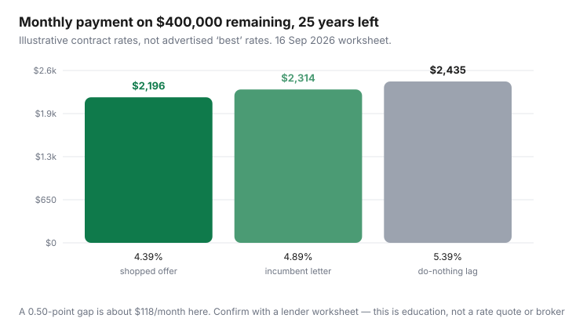

Housing · Canada
How to shop a Canadian mortgage renewal in 2026—and when switching lenders saves shelter cost
The first renewal letter is a starting bid. Households who treat it as a verdict leave real monthly money on the table — which is a rent-equivalent hole in the housing budget, not a hobby for rate nerds.
This is a shelter-cost how-to for 2026: a 120-day calendar, getting the incumbent offer in writing, what OSFI’s uninsured straight-switch change (effective 21 Nov 2024) does and does not mean, and how to compare rate, cashback, fees, and prepayment privileges together. It is not brokerage advice, not a recommendation of any lender, and not a Personal Finance lecture on leverage. If you are still deciding whether to buy, use the rent-vs-buy framework first.
Disclosure: Mortgage broker and rate-comparison tools are offer types. Saving Optimizer may earn a commission if we later add partner links. We do not currently claim lender or broker partnerships. Do not use this page as a rate quote. Confirm OSFI and your lender’s rules the week you switch — they change.
Key takeaways
- Start about 120 days before maturity. Documents take longer than a weekend.
- Get the current lender’s renewal offer in writing before you negotiate or shop. Verbal “we’ll match” is not a worksheet.
- As of 21 November 2024, OSFI no longer prescribes the minimum qualifying rate (stress test) for an uninsured straight switch between federally regulated lenders when the loan amount and remaining amortization do not increase. Lenders may still apply their own affordability tests (OSFI pages reviewed 16 Sep 2026).
- The MQR for new uninsured originations remains the greater of contract rate + 2% or 5.25% on OSFI’s public MQR page (reviewed 16 Sep 2026) — that is a different lane from a straight switch.
- Compare cashback clawbacks, discharge fees, prepayment privileges, and term length. A 0.10-point “win” that costs a $3,000 penalty or kills a lump-sum privilege can lose.
Start 120 days out: calendar and document checklist
- Find the maturity date on the last annual statement. Put 120, 90, and 60 days in the calendar.
- Gather: property tax bill, home insurance, pay stubs or Notice of Assessment, condo status if applicable, remaining balance and amortization from the lender.
- Write the current payment, remaining amortization, prepayment privileges used this year, and whether the loan is insured (typically high-ratio / CMHC-style) or uninsured (often 20%+ down, or insurance already paid off in a refinance — confirm; do not guess from a forum).
- Decide the goal in one sentence: lowest payment, shortest remaining amortization, or cash back for a roof. Shopping without a goal produces a shiny rate and a worse life.
Insured mortgages and provincially regulated credit unions can sit outside the OSFI straight-switch sentence. If you are unsure which you have, ask the current lender in writing: “Is this mortgage insured? Is a switch to another bank a straight switch at the same remaining amortization and balance?”
Get your lender’s offer in writing before you negotiate
Call or message 90–120 days out and ask for the renewal offer as a document: rate, term, payment, any cashback, and any conditions. Then stop talking. A second call after you have a competing written offer is a negotiation. A first call where you accept “we’ll take care of you” is how incumbents keep a 0.40-point pad.
Incumbent advantage: staying can skip an appraisal, a discharge appointment, and a week of paperwork. Price that convenience. It is rarely worth $100+ a month for five years, and it is sometimes worth $15 a month if the competing lender wants to extend amortization without you noticing.
Straight switches and stress-test changes for uninsured mortgages (high-level, date-stamped)
OSFI’s 21 November 2024 announcement (public guidance library, reviewed 16 Sep 2026): the regulator will no longer prescribe the MQR it expects federally regulated institutions to apply when an uninsured borrower switches to a new FRFI at renewal with no increase in remaining contractual amortization or loan amount — a “straight switch.” OSFI still expects Guideline B-20 sound underwriting. Lenders can apply their own qualifying standard.
What that is not:
- Not a promise that every bank will skip a stress test. Some still will.
- Not a licence to pull cash out, add a person to title, or stretch amortization and still call it a straight switch.
- Not automatic for insured mortgages or for every credit union.
- Not investment advice to float a variable rate.
OSFI’s MQR page still states the current uninsured origination MQR as the greater of contract rate plus 2% or 5.25%, and repeats that the prescribed MQR is not expected for uninsured straight switches as defined. Read both pages the week you shop; this article is a 16 Sep 2026 snapshot.
Compare rate, cashback, fees, and prepayment privileges—not rate alone
| Line | Incumbent | Switch A | Switch B |
|---|---|---|---|
| Contract rate / term | |||
| Monthly P&I | |||
| Cashback (and clawback if you leave early) | |||
| Discharge / assignment / legal | |||
| Prepayment % / double-up | |||
| Remaining amortization (must not silently grow) |
Cashback is a loan against your future self if the clawback is 100% in year one. Prepayment privileges are how you turn a windfall into less shelter cost without a refinance. A slightly higher rate with 20% prepayment rights can beat a teaser that forbids lump sums — if you actually make the lump sums.
Broker vs bank vs credit union shopping paths
Three doors, one worksheet:
- Incumbent bank: fastest paperwork, often a lazy rate. Use as the floor.
- Another bank, direct: useful when you already have a deposit relationship they will defend. Get it in writing anyway.
- Broker: can shop multiple lenders, including some monolines. You still read the commitment. A broker is not “free” in any cosmic sense; compensation is in the product. Ask how they are paid. This is still not a referral.
- Credit union: provincially regulated. OSFI straight-switch language may not map one-for-one. Ask their credit committee rules out loud.
Avoid anyone who leads with “skip the stress test and pull cash for a renovation” if your goal is a lower housing payment. That is a different product with a different risk.
Worked monthly payment savings examples

Labelled example: $400,000 remaining, 25 years of amortization left, five-year term. Moving from 4.89% to 4.39% is about $118/month or about $7,000 over five years before you count the tax deduction of interest (which is generally not available on a principal residence — do not import U.S. mortgage-interest folklore). If the switch costs $800 in legal and discharge, it still clears in a few months. If the “lower rate” resets amortization from 22 years remaining to 30, you may have bought a smaller payment and a larger lifetime interest bill. Watch that line.
When staying put still wins
- The written gap is tiny after fees, and you value not sitting in a lawyer’s office during a work crunch.
- You are within a penalty window that is not a maturity — this article is about renewal, not breaking a closed term early. Early break math is its own ugly worksheet.
- The competing offer requires a larger loan, a longer amortization, or dropping a prepayment privilege you use.
- You fail the new lender’s internal affordability test even if OSFI does not prescribe the MQR for the switch. “Straight switch” is not “guaranteed approval.”
Staying is a decision. It is not the default setting of a tired inbox.
Sources & date stamps
- OSFI, “OSFI exempts uninsured mortgage straight switches from the prescribed MQR…” (21 Nov 2024), reviewed 16 Sep 2026.
- OSFI, “Backgrounder: Minimum Qualifying Rate (MQR)” (21 Nov 2024) and “Minimum qualifying rate for uninsured mortgages” (current rate: greater of contract + 2% or 5.25%; straight-switch exception restated) — reviewed 16 Sep 2026.
- Payment examples are labelled worksheets, not quotes from any lender’s rate sheet.
Frequently asked questions
When should I start shopping a Canadian mortgage renewal?
About 120 days before maturity. You want a written incumbent offer and time for a competing lender’s underwriting, not a weekend panic.
Did OSFI remove the stress test for switching lenders?
For uninsured straight switches between federally regulated lenders, OSFI stopped prescribing the MQR on 21 November 2024 if the loan amount and remaining amortization do not increase. Lenders may still apply their own tests. Insured loans and many credit unions can differ.
Is the lowest advertised rate the win?
No. Add cashback clawbacks, discharge and legal fees, prepayment privileges, and whether amortization quietly grew. A slightly higher rate with usable lump-sum rights can cost less shelter over the term.
Should I use a mortgage broker?
A broker is one shopping path. Ask how they are paid and still read the commitment. This page is comparison education, not a referral or brokerage advice.
When is staying with my current lender smarter?
When the written gap after fees is small, a switch would lengthen amortization, or you would fail the new lender’s affordability process. Convenience has a price — write it down.